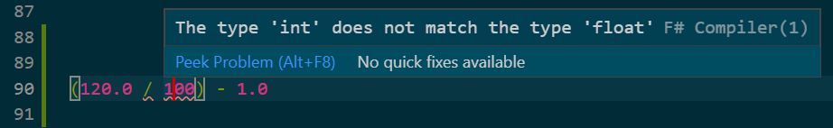

A good place to start is to define a one-period return calculation.
Objectives:
We are going to focus on interactive programming. This is the most productive (and most common) type of analytic programming. In constrast to compiled programs (e.g, C, C++, Fortran, Java), interactive programs:
- Allow rapid iterative development.
- You can quickly quickly write and rewrite sections of code, evaluating the output, without having to rerun the entire program.
- This is especially useful for financial analysis, because we often evaluate large datasets that take a long time to process.
Interactive programming typically involves a REPL (Read, Evaluate, Print, Loop). It is common for scripting langauges such as R, Python, Julia, Ruby, and Perl.
The most basic way that you can run interactive code is at the command line using an interpreter. We can start the F# interactive interpreter by opening a terminal (e.g., terminal.app, cmd, powershell) and running dotnet fsi.
Once fsi is open, we can type a code snippet in the prompt followed by ";;" to terminate it and it will run.

It is fine to run code this way, but we can do better using an IDE (Integrated development environment) that incorportes syntax highlighting, intellisense tooltips, and execution. We will use two common IDE's: Visual Studio Code with the Ionide extension and Jupyter Notebooks.
Let's assume that you have $120.00 today and that you had $100.00 a year ago. Your annual return is then:
(120.0 / 100.0) - 1.0
Notice that I included a decimal point "." in the numbers. The decimal point makes it a floating point number. Floating point numbers (floats) are the most commonly used numerical type for mathematical calculations.
If we left the decimal point off and wrote "120" without the ".0" at the end it would be an integer and we would get the wrong answer because integers cannot represent fractions.
(120/100) - 1
The other main numerical data type is decimal.
(120m/100m) - 1m
val it: decimal = 0.2M {Scale = 1uy;}
|
Decimals are used when you need an exact fractional amount. Floats are insufficient in these circumstances because "... such representations typically restrict the denominator to a power of two ... 0.3 (3/10) might be represented as 5404319552844595/18014398509481984 (0.299999999999999988897769...)" (see wiki).
Finally, since F# is staticly typed, we must do arithmetic using numbers that are all the same type. If we mix floats and integers we will get an error:
(120.0 / 100) - 1.0
fundamentals.fsx(18,10): error FS0001: The type 'int' does not match the type 'float'
|
Static tying can slow you down a bit writing simple small programs, but as programs get larger and more complex the benefits become apparent. Specifically, static typing as implemented by F#:
- helps you ensure that the code is correct (i.e., the type of the input data matches what the function expects). In the words of Yaron Minksy at Janestreet, you can "make illegal states unrepresentable" (see here for F# examples).
- it also facilitates editor tooling that can check your code without running it and give tooltip errors (you should have seen a tooltip error in your editor if you type
(120.0 / 100) - 1.0 in your program file). It's like clippy on steriods (you are too young, but your parents might get this reference).

Image source
We could also do the same calculations by assigning $120.00 and $100.0 to named values.
let yearAgo = 100.0
let today = 120.0
(today / yearAgo) - 1.0
val yearAgo: float = 100.0
val today: float = 120.0
val it: float = 0.2
|
This works for one-off calculations, but if we want to do this more than once, then it makes more sense to define a function to do this calculation.
Functions map (or transform) inputs into outputs.
Here is a simple function named addOne.
It takes an input x and then it adds 1 to whatever x is.
let addOne x = x + 1
addOne 0 // here x is 0
addOne 1 // here x is 1
addOne 2 // here x is 2
We can also chain them
addOne (addOne (addOne 0)) // = (1 + (1 + (1 + 0)))
We can define a function to calcuate a return.
let calcReturn pv fv = (fv / pv) - 1.0
The type signature tells us that calcReturn is a function with two float inputs (pv and fv) and it maps those two inputs into a float output. The program was able to infer that pv and fv are floats because of the 1.0 float in the calculation.
We can execute it on simple floats:
// here pv = 100., fv = 110.0
calcReturn 100.0 110.0
// here pv = 80.0, fv = 60.0
calcReturn 80.0 60.0
Or we can execute it on our previously defined yearAgo and today values:
calcReturn yearAgo today
Our prior return calculation did not handle cash distributions such as dividends. We can incorporate dividends with a small modificaton:
let simpleReturn beginningPrice endingPrice dividend =
// This is solving for `r` in FV = PV*(1+r)^t where t=1.
(endingPrice + dividend) / beginningPrice - 1.0
The examples thus far have used simple (per period) compounding. We can also calculate continuously compounded returns, also known as log returns.
let logReturn beginningPrice endingPrice dividend =
// This is solving for `r` in FV = PV*e^(rt) where t=1.
log(endingPrice + dividend) - log(beginningPrice)
These two calculations give slightly different returns.
simpleReturn 100.0 110.0 0.0
logReturn 100.0 110.0 0.0
val it: float = 0.0953101798
|
It is typically not important which version of return you use so long as you are consistent and keep track of what type of return it is when you're compounding things.
Practice: Can you write a function to compound an initial investment of $100.00 at 6% for 5 years? You can calculate power and exponents using:
2.0**3.0
log 2.0
val it: float = 0.6931471806
|
exp 0.6931
val it: float = 1.999905641
|
exp(log(2.0))
Looking at our return functions, we're starting to get several values that we're passing into the functions individaully. It can be useful to group these values together to make it easy to pass them around. Tuples are a simple way to group values.
Further information about tuples can be found in the F# Language reference and the F# for Fun and Profit websites.
(1,2)
val it: int * int = (1, 2)
|
(1,2,3)
val it: int * int * int = (1, 2, 3)
|
Tubles can contain mixed types.
(1,"2")
val it: int * string = (1, "2")
|
We can also deconstruct tuples. We can use built-in convenience functions for pairs.
fst (1,2)
snd (1,2)
We can also deconstruct tuples using pattern matching.
let (a, b) = (1, 2)
val b: int = 2
val a: int = 1
|
let (c, d, e) = (1, "2", 3.0)
val e: float = 3.0
val d: string = "2"
val c: int = 1
|
Now redefining our simple return function to take a single tuple as the input parameter.
let simpleReturnTuple (beginningPrice, endingPrice, dividend) =
// This is solving for `r` in FV = PV*(1+r)^t where t=1.
(endingPrice + dividend) / beginningPrice - 1.0
simpleReturnTuple (100.0, 110.0, 0.0)
val simpleReturnTuple:
beginningPrice: float * endingPrice: float * dividend: float -> float
val it: float = 0.1
|
let xx = (100.0, 110.0, 0.0)
simpleReturnTuple xx
val xx: float * float * float = (100.0, 110.0, 0.0)
val it: float = 0.1
|
If we want more structure than a tuple, then we can define a record.
For more information on records see the relevant sections of the F# language reference or F# for Fun and Profit websites.
You must first define the record type before you use it:
type RecordExample =
{ BeginningPrice : float
EndingPrice : float
Dividend : float }
And construct a value with that record type.
let x = { BeginningPrice = 100.0; EndingPrice = 110.0; Dividend = 0.0}
val x: RecordExample = { BeginningPrice = 100.0
EndingPrice = 110.0
Dividend = 0.0 }
|
Similar to tuples, we can deconstruct our record value x using pattern matching.
let { BeginningPrice = aa; EndingPrice = bb; Dividend = cc} = x
val cc: float = 0.0
val bb: float = 110.0
val aa: float = 100.0
|
We can also access individual fields by name.
x.EndingPrice / x.BeginningPrice
We can define a return function that operates on the RecordExample type explicitly:
let simpleReturnRecord1 { BeginningPrice = beginningPrice; EndingPrice = endingPrice; Dividend = dividend} =
// This is solving for `r` in FV = PV*(1+r)^t where t=1.
(endingPrice + dividend) / beginningPrice - 1.0
Or we can let the compiler's type inference figure out the input type.
let simpleReturnRecord2 x =
// This is solving for `r` in FV = PV*(1+r)^t where t=1.
(x.EndingPrice + x.Dividend) / x.BeginningPrice - 1.0
Or we can provide a type hint to tell the compiler the type of the input.
let simpleReturnRecord3 (x : RecordExample) =
// This is solving for `r` in FV = PV*(1+r)^t where t=1.
(x.EndingPrice + x.Dividend) / x.BeginningPrice - 1.0
All 3 can be used interchangably, but when you have many similar types a type hint may be necessary to make the particular type that you want explicit.
simpleReturnRecord1 x
simpleReturnRecord2 x
simpleReturnRecord3 x
Pipelines and lambda functions are two important tools. Pipelines are created using the pipe operator (|>) and allow you to pipe the output of one function to the input of another. Lambda expressions allow you to create functions on the fly.
Take this example from before
addOne (addOne (addOne 0)) // = (1 + (1 + (1 + 0)))
We can write the same thing using pipes.
0 |> addOne |> addOne |> addOne // = (1 + (1 + (1 + 0)))
lambda expressions fun x -> ... are used to create functions on the fly.
1.0 |> fun x -> x + 1.0 |> fun x -> x ** 2.0
Collections provide a way to store multiple values together.
Maybe you want to store a list of stock prices, or an array of portfolios.
A simple int array.
let ar = [| 0 .. 10 |]
ar
val it: int array = [|0; 1; 2; 3; 4; 5; 6; 7; 8; 9; 10|]
|
When we look at the type signature of the elements in the array val ar : int [], it tells us that we have a integer array, meaning an array in which each element of the array is an integer. Arrays are "zero indexed", meaning the 0th item is the first in the array.
We can access the elements individually
ar[0]
ar[3]
Or we can access a range of elements.
ar[0 .. 2]
val it: int array = [|0; 1; 2|]
|
Lists and sequences are similar.
// List
[ 1.0 .. 10.0 ]
val it: float list = [1.0; 2.0; 3.0; 4.0; 5.0; 6.0; 7.0; 8.0; 9.0; 10.0]
|
// Sequence
seq { 1.0 .. 10.0 }
val it: float seq = seq [1.0; 2.0; 3.0; 4.0; ...]
|
Arrays, lists, and sequences have different properties that can make one data structure preferable to the others in a given setting. We'll discuss these different properties in due time, but for an overview you can see the F# collection language reference here. Sequences are the most different as they are "lazy", meaning "Sequences are particularly useful when you have a large, ordered collection of data but don't necessarily expect to use all the elements. Individual sequence elements are computed only as required, so a sequence can perform better than a list if not all the elements are used" (see F# language reference).
These collections have several built-in functions for operating on them such as map, filter, groupBy, etc.
Array.map applies a function to each element of an array.
ar
|> Array.map(fun x -> x + 1)
val it: int array = [|1; 2; 3; 4; 5; 6; 7; 8; 9; 10; 11|]
|
The Array.map function is equivalent to
[| for x in ar do x + 1 |]
Array.filter filters elements of a list to those for which a function evaluates to true.
ar
|> Array.filter(fun x -> x < 5)
val it: int array = [|0; 1; 2; 3; 4|]
|
Array.filter is equivalent to
[| for x in ar do if x < 5 then x |]
While the comprehension syntax [| for x in ar do ... |] is common to use,
the Array module functions tend to be more useful when you're chaining multiple operations
together using pipes.
For example, this is what a groupBy function does.
ar
|> Array.groupBy(fun x -> x < 5)
val it: (bool * int array) array =
[|(true, [|0; 1; 2; 3; 4|]); (false, [|5; 6; 7; 8; 9; 10|])|]
|
Now a pipeline of two operations.
ar
|> Array.groupBy(fun x -> x < 5)
|> Array.map(fun (group, xs) -> Array.min xs, Array.max xs)
val it: (int * int) array = [|(0, 4); (5, 10)|]
|
With this foundation, let's now try loading some data.
We are going to load some helper code that allows us to download and plot this data.
This will introduce using the nuget package manager for loading external libraries,
and how to open namespaces.
We're going to use the Quotes.YahooFinance library for this.
We download the code from the nuget.org package manager.
This is equivalent to loading libraries with pip or conda in python
or install.packages in R.
#r "nuget: Quotes.YahooFinance, 0.0.5"
We now have access to the code in the Quotes.YahooFinance library.
The library has a function called YahooFinance.History that we
can use to download quote histories from yahoo finance.
We can access code using fully qualified names.
Quotes.YahooFinance.YahooFinance.History("AAPL")
However, it's common to open a library's namespace in order to access
the library's functionality directly.
open Quotes.YahooFinance
YahooFinance.History("AAPL")
Namespaces such as Quotes.YahooFinance are a hierarchical way of organizing code.
We are ready to request some data. Let's define our start and end dates.
DateTime is a type in the System namespace.
open System
let myStart = DateTime(2020,1,1)
let myEnd = DateTime.UtcNow
myEnd
let aapl = YahooFinance.History("AAPL",startDate=myStart,endDate=myEnd,interval = Interval.Daily)
Now let's plot the stock price using Plotly.NET.
#r "nuget: Plotly.NET, 3.*"
#r "nuget: Plotly.NET.Interactive, 3.*"
open Plotly.NET
let dateAdjClose = [ for x in aapl do x.Date, x.AdjustedClose ]
dateAdjClose[..3]
input.fsx (6,31)-(6,35) typecheck error The value or constructor 'aapl' is not defined.
input.fsx (6,39)-(6,45) typecheck error Lookup on object of indeterminate type based on information prior to this program point. A type annotation may be needed prior to this program point to constrain the type of the object. This may allow the lookup to be resolved.
input.fsx (6,47)-(6,62) typecheck error Lookup on object of indeterminate type based on information prior to this program point. A type annotation may be needed prior to this program point to constrain the type of the object. This may allow the lookup to be resolved.
[Loading C:\Users\runneradmin\.packagemanagement\nuget\Projects\4004--03f285cf-3b4a-49d5-ac0c-0ca5f8fdd20f\Project.fsproj.fsx]
module FSI_0231.Project.fsproj
|
dateAdjClose
|> Chart.Line
No value returned by any evaluator
|
Let's calculate returns for this data. Typically we calculate close-close returns. Looking at the data, we could use the close, divCash, and splitFacor columns to calculate returns accounting for stock splits and dividends (a good at home exercise). But there is also an adjClose column that accounts for both those things. So we we can use this
// Returns
let returns =
aapl
|> List.sortBy(fun x -> x.Date)
|> List.pairwise
|> List.map(fun (a,b) -> b.Date, calcReturn a.AdjustedClose b.AdjustedClose)
let avgReturnEachMonth =
returns
|> List.groupBy(fun (date, ret) -> DateTime(date.Year, date.Month,1))
|> List.map(fun (month, xs) ->
let avgPrice = [ for (date, price) in xs do price ] |> List.average
month, xs.Length, avgPrice)
We can look at a few of these
avgReturnEachMonth |> List.take 3
input.fsx (1,1)-(1,19) typecheck error The value or constructor 'avgReturnEachMonth' is not defined.
|
let monthlyReturnChart =
avgReturnEachMonth
|> List.map(fun (month, cnt, ret) -> month, ret)
|> Chart.Bar
monthlyReturnChart
No value returned by any evaluator
|
We represent volatility by the standard deviation of returns. We can define a standard deviation function ourself.
let stddev xs =
let mu = xs |> Seq.average
let sse = xs |> Seq.sumBy(fun x -> (x - mu)**2.0)
let n = xs |> Seq.length |> float
sqrt (sse / (n - 1.0))
[1.0 .. 10.0 ] |> stddev
val stddev: xs: float seq -> float
val it: float = 3.027650354
|
But it is also convenient to use the FSharp.Stats
#r "nuget: FSharp.Stats, 0.5.0"
open FSharp.Stats
[1.0 .. 10.0 ] |> stDev
[Loading C:\Users\runneradmin\.packagemanagement\nuget\Projects\4004--03f285cf-3b4a-49d5-ac0c-0ca5f8fdd20f\Project.fsproj.fsx]
module FSI_0254.Project.fsproj
val it: float = 3.027650354
|
Now let's look at 5-day rolling volatilities.
let rollingVols =
returns
// Sort by date again because you never can be too careful
// about making sure that you have the right sort order.
|> List.sortBy fst
|> List.windowed 5
|> List.map(fun xs ->
let maxWindowDate = xs |> Seq.map fst |> Seq.max
let dailyVol =
xs
|> List.map (fun (date, ret) -> ret)
|> stDev
let annualizedVolInPct = dailyVol * sqrt(252.0) * 100.0
maxWindowDate, annualizedVolInPct)
let volChart =
rollingVols
|> Chart.Line
volChart
No value returned by any evaluator
|
val yearAgo: float
val today: float
val addOne: x: int -> int
val x: int
val calcReturn: pv: float -> fv: float -> float
val pv: float
val fv: float
val simpleReturn: beginningPrice: float -> endingPrice: float -> dividend: float -> float
val beginningPrice: float
val endingPrice: float
val dividend: float
val logReturn: beginningPrice: float -> endingPrice: float -> dividend: float -> float
val log: value: 'T -> 'T (requires member Log)
val exp: value: 'T -> 'T (requires member Exp)
val fst: tuple: ('T1 * 'T2) -> 'T1
val snd: tuple: ('T1 * 'T2) -> 'T2
val a: int
val b: int
val c: int
val d: string
val e: float
val simpleReturnTuple: beginningPrice: float * endingPrice: float * dividend: float -> float
val xx: float * float * float
type RecordExample =
{
BeginningPrice: float
EndingPrice: float
Dividend: float
}
Multiple items
val float: value: 'T -> float (requires member op_Explicit)
--------------------
type float = System.Double
--------------------
type float<'Measure> =
float
val x: RecordExample
val aa: float
val bb: float
val cc: float
RecordExample.EndingPrice: float
RecordExample.BeginningPrice: float
val simpleReturnRecord1: RecordExample -> float
val simpleReturnRecord2: x: RecordExample -> float
RecordExample.Dividend: float
val simpleReturnRecord3: x: RecordExample -> float
val x: float
val ar: int array
Multiple items
val seq: sequence: 'T seq -> 'T seq
--------------------
type 'T seq = System.Collections.Generic.IEnumerable<'T>
module Array
from Microsoft.FSharp.Collections
val map: mapping: ('T -> 'U) -> array: 'T array -> 'U array
val filter: predicate: ('T -> bool) -> array: 'T array -> 'T array
val groupBy: projection: ('T -> 'Key) -> array: 'T array -> ('Key * 'T array) array (requires equality)
val group: bool
val xs: int array
val min: array: 'T array -> 'T (requires comparison)
val max: array: 'T array -> 'T (requires comparison)
namespace Quotes
namespace Quotes.YahooFinance
type YahooFinance =
static member Dividends: symbols: string list * ?startDate: DateTime * ?endDate: DateTime * ?interval: Interval * ?displayLogs: bool -> Dividend list
static member History: symbol: string * ?startDate: DateTime * ?endDate: DateTime * ?interval: Interval * ?displayLogs: bool -> Quote list + 1 overload
static member Meta: symbols: string list * ?startDate: DateTime * ?endDate: DateTime * ?interval: Interval * ?displayLogs: bool -> Meta list
static member Quotes.YahooFinance.YahooFinance.History: symbols: string seq * ?startDate: System.DateTime * ?endDate: System.DateTime * ?interval: Quotes.YahooFinance.Interval * ?displayLogs: bool -> Quotes.YahooFinance.Quote list
static member Quotes.YahooFinance.YahooFinance.History: symbol: string * ?startDate: System.DateTime * ?endDate: System.DateTime * ?interval: Quotes.YahooFinance.Interval * ?displayLogs: bool -> Quotes.YahooFinance.Quote list
static member YahooFinance.History: symbols: string seq * ?startDate: System.DateTime * ?endDate: System.DateTime * ?interval: Interval * ?displayLogs: bool -> Quote list
static member YahooFinance.History: symbol: string * ?startDate: System.DateTime * ?endDate: System.DateTime * ?interval: Interval * ?displayLogs: bool -> Quote list
namespace System
val myStart: DateTime
Multiple items
[<Struct>]
type DateTime =
new: year: int * month: int * day: int -> unit + 16 overloads
member Add: value: TimeSpan -> DateTime
member AddDays: value: float -> DateTime
member AddHours: value: float -> DateTime
member AddMicroseconds: value: float -> DateTime
member AddMilliseconds: value: float -> DateTime
member AddMinutes: value: float -> DateTime
member AddMonths: months: int -> DateTime
member AddSeconds: value: float -> DateTime
member AddTicks: value: int64 -> DateTime
...
<summary>Represents an instant in time, typically expressed as a date and time of day.</summary>
--------------------
DateTime ()
(+0 other overloads)
DateTime(ticks: int64) : DateTime
(+0 other overloads)
DateTime(ticks: int64, kind: DateTimeKind) : DateTime
(+0 other overloads)
DateTime(date: DateOnly, time: TimeOnly) : DateTime
(+0 other overloads)
DateTime(year: int, month: int, day: int) : DateTime
(+0 other overloads)
DateTime(date: DateOnly, time: TimeOnly, kind: DateTimeKind) : DateTime
(+0 other overloads)
DateTime(year: int, month: int, day: int, calendar: Globalization.Calendar) : DateTime
(+0 other overloads)
DateTime(year: int, month: int, day: int, hour: int, minute: int, second: int) : DateTime
(+0 other overloads)
DateTime(year: int, month: int, day: int, hour: int, minute: int, second: int, kind: DateTimeKind) : DateTime
(+0 other overloads)
DateTime(year: int, month: int, day: int, hour: int, minute: int, second: int, calendar: Globalization.Calendar) : DateTime
(+0 other overloads)
val myEnd: DateTime
property DateTime.UtcNow: DateTime with get
<summary>Gets a <see cref="T:System.DateTime" /> object that is set to the current date and time on this computer, expressed as the Coordinated Universal Time (UTC).</summary>
<returns>An object whose value is the current UTC date and time.</returns>
val aapl: Quote list
static member YahooFinance.History: symbols: string seq * ?startDate: DateTime * ?endDate: DateTime * ?interval: Interval * ?displayLogs: bool -> Quote list
static member YahooFinance.History: symbol: string * ?startDate: DateTime * ?endDate: DateTime * ?interval: Interval * ?displayLogs: bool -> Quote list
type Interval =
| Daily
| Weekly
| Monthly
| Quarterly
| SemiAnnual
| Annual
| TwoYear
| FiveYear
| TenYear
| YearToDate
...
override ToString: unit -> string
union case Interval.Daily: Interval
namespace Plotly
namespace Plotly.NET
val dateAdjClose: (DateTime * float) list
val x: Quote
Quote.Date: DateTime
Quote.AdjustedClose: float
<summary>
Split and dividend adjusted Close price
</summary>
type Chart =
static member AnnotatedHeatmap: zData: #('a1 seq) seq * annotationText: #(string seq) seq * [<Optional; DefaultParameterValue ((null :> obj))>] ?Name: string * [<Optional; DefaultParameterValue ((null :> obj))>] ?ShowLegend: bool * [<Optional; DefaultParameterValue ((null :> obj))>] ?Opacity: float * [<Optional; DefaultParameterValue ((null :> obj))>] ?X: #IConvertible seq * [<Optional; DefaultParameterValue ((null :> obj))>] ?XGap: int * [<Optional; DefaultParameterValue ((null :> obj))>] ?Y: #IConvertible seq * [<Optional; DefaultParameterValue ((null :> obj))>] ?YGap: int * [<Optional; DefaultParameterValue ((null :> obj))>] ?Text: 'a5 * [<Optional; DefaultParameterValue ((null :> obj))>] ?MultiText: 'a5 seq * [<Optional; DefaultParameterValue ((null :> obj))>] ?ColorBar: ColorBar * [<Optional; DefaultParameterValue ((null :> obj))>] ?ColorScale: Colorscale * [<Optional; DefaultParameterValue ((null :> obj))>] ?ShowScale: bool * [<Optional; DefaultParameterValue ((null :> obj))>] ?ReverseScale: bool * [<Optional; DefaultParameterValue ((null :> obj))>] ?ZSmooth: SmoothAlg * [<Optional; DefaultParameterValue ((null :> obj))>] ?Transpose: bool * [<Optional; DefaultParameterValue ((false :> obj))>] ?UseWebGL: bool * [<Optional; DefaultParameterValue ((false :> obj))>] ?ReverseYAxis: bool * [<Optional; DefaultParameterValue ((true :> obj))>] ?UseDefaults: bool -> GenericChart (requires 'a1 :> IConvertible and 'a5 :> IConvertible) + 1 overload
static member Area: x: #IConvertible seq * y: #IConvertible seq * [<Optional; DefaultParameterValue ((null :> obj))>] ?ShowMarkers: bool * [<Optional; DefaultParameterValue ((null :> obj))>] ?Name: string * [<Optional; DefaultParameterValue ((null :> obj))>] ?ShowLegend: bool * [<Optional; DefaultParameterValue ((null :> obj))>] ?Opacity: float * [<Optional; DefaultParameterValue ((null :> obj))>] ?MultiOpacity: float seq * [<Optional; DefaultParameterValue ((null :> obj))>] ?Text: 'a2 * [<Optional; DefaultParameterValue ((null :> obj))>] ?MultiText: 'a2 seq * [<Optional; DefaultParameterValue ((null :> obj))>] ?TextPosition: TextPosition * [<Optional; DefaultParameterValue ((null :> obj))>] ?MultiTextPosition: TextPosition seq * [<Optional; DefaultParameterValue ((null :> obj))>] ?MarkerColor: Color * [<Optional; DefaultParameterValue ((null :> obj))>] ?MarkerColorScale: Colorscale * [<Optional; DefaultParameterValue ((null :> obj))>] ?MarkerOutline: Line * [<Optional; DefaultParameterValue ((null :> obj))>] ?MarkerSymbol: MarkerSymbol * [<Optional; DefaultParameterValue ((null :> obj))>] ?MultiMarkerSymbol: MarkerSymbol seq * [<Optional; DefaultParameterValue ((null :> obj))>] ?Marker: Marker * [<Optional; DefaultParameterValue ((null :> obj))>] ?LineColor: Color * [<Optional; DefaultParameterValue ((null :> obj))>] ?LineColorScale: Colorscale * [<Optional; DefaultParameterValue ((null :> obj))>] ?LineWidth: float * [<Optional; DefaultParameterValue ((null :> obj))>] ?LineDash: DrawingStyle * [<Optional; DefaultParameterValue ((null :> obj))>] ?Line: Line * [<Optional; DefaultParameterValue ((null :> obj))>] ?StackGroup: string * [<Optional; DefaultParameterValue ((null :> obj))>] ?Orientation: Orientation * [<Optional; DefaultParameterValue ((null :> obj))>] ?GroupNorm: GroupNorm * [<Optional; DefaultParameterValue ((null :> obj))>] ?FillColor: Color * [<Optional; DefaultParameterValue ((false :> obj))>] ?UseWebGL: bool * [<Optional; DefaultParameterValue ((true :> obj))>] ?UseDefaults: bool -> GenericChart (requires 'a2 :> IConvertible) + 1 overload
static member Bar: values: #IConvertible seq * [<Optional; DefaultParameterValue ((null :> obj))>] ?Keys: #IConvertible seq * [<Optional; DefaultParameterValue ((null :> obj))>] ?Name: string * [<Optional; DefaultParameterValue ((null :> obj))>] ?ShowLegend: bool * [<Optional; DefaultParameterValue ((null :> obj))>] ?Opacity: float * [<Optional; DefaultParameterValue ((null :> obj))>] ?MultiOpacity: float seq * [<Optional; DefaultParameterValue ((null :> obj))>] ?Text: 'a2 * [<Optional; DefaultParameterValue ((null :> obj))>] ?MultiText: 'a2 seq * [<Optional; DefaultParameterValue ((null :> obj))>] ?MarkerColor: Color * [<Optional; DefaultParameterValue ((null :> obj))>] ?MarkerColorScale: Colorscale * [<Optional; DefaultParameterValue ((null :> obj))>] ?MarkerOutline: Line * [<Optional; DefaultParameterValue ((null :> obj))>] ?MarkerPatternShape: PatternShape * [<Optional; DefaultParameterValue ((null :> obj))>] ?MultiMarkerPatternShape: PatternShape seq * [<Optional; DefaultParameterValue ((null :> obj))>] ?MarkerPattern: Pattern * [<Optional; DefaultParameterValue ((null :> obj))>] ?Marker: Marker * [<Optional; DefaultParameterValue ((null :> obj))>] ?Base: #IConvertible * [<Optional; DefaultParameterValue ((null :> obj))>] ?Width: 'a4 * [<Optional; DefaultParameterValue ((null :> obj))>] ?MultiWidth: 'a4 seq * [<Optional; DefaultParameterValue ((null :> obj))>] ?TextPosition: TextPosition * [<Optional; DefaultParameterValue ((null :> obj))>] ?MultiTextPosition: TextPosition seq * [<Optional; DefaultParameterValue ((true :> obj))>] ?UseDefaults: bool -> GenericChart (requires 'a2 :> IConvertible and 'a4 :> IConvertible) + 1 overload
static member BoxPlot: [<Optional; DefaultParameterValue ((null :> obj))>] ?X: #IConvertible seq * [<Optional; DefaultParameterValue ((null :> obj))>] ?Y: #IConvertible seq * [<Optional; DefaultParameterValue ((null :> obj))>] ?Name: string * [<Optional; DefaultParameterValue ((null :> obj))>] ?ShowLegend: bool * [<Optional; DefaultParameterValue ((null :> obj))>] ?Text: 'a2 * [<Optional; DefaultParameterValue ((null :> obj))>] ?MultiText: 'a2 seq * [<Optional; DefaultParameterValue ((null :> obj))>] ?FillColor: Color * [<Optional; DefaultParameterValue ((null :> obj))>] ?MarkerColor: Color * [<Optional; DefaultParameterValue ((null :> obj))>] ?Marker: Marker * [<Optional; DefaultParameterValue ((null :> obj))>] ?Opacity: float * [<Optional; DefaultParameterValue ((null :> obj))>] ?WhiskerWidth: float * [<Optional; DefaultParameterValue ((null :> obj))>] ?BoxPoints: BoxPoints * [<Optional; DefaultParameterValue ((null :> obj))>] ?BoxMean: BoxMean * [<Optional; DefaultParameterValue ((null :> obj))>] ?Jitter: float * [<Optional; DefaultParameterValue ((null :> obj))>] ?PointPos: float * [<Optional; DefaultParameterValue ((null :> obj))>] ?Orientation: Orientation * [<Optional; DefaultParameterValue ((null :> obj))>] ?OutlineColor: Color * [<Optional; DefaultParameterValue ((null :> obj))>] ?OutlineWidth: float * [<Optional; DefaultParameterValue ((null :> obj))>] ?Outline: Line * [<Optional; DefaultParameterValue ((null :> obj))>] ?AlignmentGroup: string * [<Optional; DefaultParameterValue ((null :> obj))>] ?OffsetGroup: string * [<Optional; DefaultParameterValue ((null :> obj))>] ?Notched: bool * [<Optional; DefaultParameterValue ((null :> obj))>] ?NotchWidth: float * [<Optional; DefaultParameterValue ((null :> obj))>] ?QuartileMethod: QuartileMethod * [<Optional; DefaultParameterValue ((true :> obj))>] ?UseDefaults: bool -> GenericChart (requires 'a2 :> IConvertible) + 2 overloads
static member Bubble: x: #IConvertible seq * y: #IConvertible seq * sizes: int seq * [<Optional; DefaultParameterValue ((null :> obj))>] ?Name: string * [<Optional; DefaultParameterValue ((null :> obj))>] ?ShowLegend: bool * [<Optional; DefaultParameterValue ((null :> obj))>] ?Opacity: float * [<Optional; DefaultParameterValue ((null :> obj))>] ?MultiOpacity: float seq * [<Optional; DefaultParameterValue ((null :> obj))>] ?Text: 'a2 * [<Optional; DefaultParameterValue ((null :> obj))>] ?MultiText: 'a2 seq * [<Optional; DefaultParameterValue ((null :> obj))>] ?TextPosition: TextPosition * [<Optional; DefaultParameterValue ((null :> obj))>] ?MultiTextPosition: TextPosition seq * [<Optional; DefaultParameterValue ((null :> obj))>] ?MarkerColor: Color * [<Optional; DefaultParameterValue ((null :> obj))>] ?MarkerColorScale: Colorscale * [<Optional; DefaultParameterValue ((null :> obj))>] ?MarkerOutline: Line * [<Optional; DefaultParameterValue ((null :> obj))>] ?MarkerSymbol: MarkerSymbol * [<Optional; DefaultParameterValue ((null :> obj))>] ?MultiMarkerSymbol: MarkerSymbol seq * [<Optional; DefaultParameterValue ((null :> obj))>] ?Marker: Marker * [<Optional; DefaultParameterValue ((null :> obj))>] ?LineColor: Color * [<Optional; DefaultParameterValue ((null :> obj))>] ?LineColorScale: Colorscale * [<Optional; DefaultParameterValue ((null :> obj))>] ?LineWidth: float * [<Optional; DefaultParameterValue ((null :> obj))>] ?LineDash: DrawingStyle * [<Optional; DefaultParameterValue ((null :> obj))>] ?Line: Line * [<Optional; DefaultParameterValue ((null :> obj))>] ?StackGroup: string * [<Optional; DefaultParameterValue ((null :> obj))>] ?Orientation: Orientation * [<Optional; DefaultParameterValue ((null :> obj))>] ?GroupNorm: GroupNorm * [<Optional; DefaultParameterValue ((false :> obj))>] ?UseWebGL: bool * [<Optional; DefaultParameterValue ((true :> obj))>] ?UseDefaults: bool -> GenericChart (requires 'a2 :> IConvertible) + 1 overload
static member Candlestick: ``open`` : #IConvertible seq * high: #IConvertible seq * low: #IConvertible seq * close: #IConvertible seq * x: #IConvertible seq * [<Optional; DefaultParameterValue ((null :> obj))>] ?Name: string * [<Optional; DefaultParameterValue ((null :> obj))>] ?ShowLegend: bool * [<Optional; DefaultParameterValue ((null :> obj))>] ?Opacity: float * [<Optional; DefaultParameterValue ((null :> obj))>] ?Text: 'a5 * [<Optional; DefaultParameterValue ((null :> obj))>] ?MultiText: 'a5 seq * [<Optional; DefaultParameterValue ((null :> obj))>] ?Line: Line * [<Optional; DefaultParameterValue ((null :> obj))>] ?IncreasingColor: Color * [<Optional; DefaultParameterValue ((null :> obj))>] ?Increasing: FinanceMarker * [<Optional; DefaultParameterValue ((null :> obj))>] ?DecreasingColor: Color * [<Optional; DefaultParameterValue ((null :> obj))>] ?Decreasing: FinanceMarker * [<Optional; DefaultParameterValue ((null :> obj))>] ?WhiskerWidth: float * [<Optional; DefaultParameterValue ((true :> obj))>] ?UseDefaults: bool -> GenericChart (requires 'a5 :> IConvertible) + 1 overload
static member Column: values: #IConvertible seq * [<Optional; DefaultParameterValue ((null :> obj))>] ?Keys: #IConvertible seq * [<Optional; DefaultParameterValue ((null :> obj))>] ?Name: string * [<Optional; DefaultParameterValue ((null :> obj))>] ?ShowLegend: bool * [<Optional; DefaultParameterValue ((null :> obj))>] ?Opacity: float * [<Optional; DefaultParameterValue ((null :> obj))>] ?MultiOpacity: float seq * [<Optional; DefaultParameterValue ((null :> obj))>] ?Text: 'a2 * [<Optional; DefaultParameterValue ((null :> obj))>] ?MultiText: 'a2 seq * [<Optional; DefaultParameterValue ((null :> obj))>] ?MarkerColor: Color * [<Optional; DefaultParameterValue ((null :> obj))>] ?MarkerColorScale: Colorscale * [<Optional; DefaultParameterValue ((null :> obj))>] ?MarkerOutline: Line * [<Optional; DefaultParameterValue ((null :> obj))>] ?MarkerPatternShape: PatternShape * [<Optional; DefaultParameterValue ((null :> obj))>] ?MultiMarkerPatternShape: PatternShape seq * [<Optional; DefaultParameterValue ((null :> obj))>] ?MarkerPattern: Pattern * [<Optional; DefaultParameterValue ((null :> obj))>] ?Marker: Marker * [<Optional; DefaultParameterValue ((null :> obj))>] ?Base: #IConvertible * [<Optional; DefaultParameterValue ((null :> obj))>] ?Width: 'a4 * [<Optional; DefaultParameterValue ((null :> obj))>] ?MultiWidth: 'a4 seq * [<Optional; DefaultParameterValue ((null :> obj))>] ?TextPosition: TextPosition * [<Optional; DefaultParameterValue ((null :> obj))>] ?MultiTextPosition: TextPosition seq * [<Optional; DefaultParameterValue ((true :> obj))>] ?UseDefaults: bool -> GenericChart (requires 'a2 :> IConvertible and 'a4 :> IConvertible) + 1 overload
static member Contour: zData: #('a1 seq) seq * [<Optional; DefaultParameterValue ((null :> obj))>] ?Name: string * [<Optional; DefaultParameterValue ((null :> obj))>] ?ShowLegend: bool * [<Optional; DefaultParameterValue ((null :> obj))>] ?Opacity: float * [<Optional; DefaultParameterValue ((null :> obj))>] ?X: #IConvertible seq * [<Optional; DefaultParameterValue ((null :> obj))>] ?Y: #IConvertible seq * [<Optional; DefaultParameterValue ((null :> obj))>] ?Text: 'a4 * [<Optional; DefaultParameterValue ((null :> obj))>] ?MultiText: 'a4 seq * [<Optional; DefaultParameterValue ((null :> obj))>] ?ColorBar: ColorBar * [<Optional; DefaultParameterValue ((null :> obj))>] ?ColorScale: Colorscale * [<Optional; DefaultParameterValue ((null :> obj))>] ?ShowScale: bool * [<Optional; DefaultParameterValue ((null :> obj))>] ?ReverseScale: bool * [<Optional; DefaultParameterValue ((null :> obj))>] ?Transpose: bool * [<Optional; DefaultParameterValue ((null :> obj))>] ?ContourLineColor: Color * [<Optional; DefaultParameterValue ((null :> obj))>] ?ContourLineDash: DrawingStyle * [<Optional; DefaultParameterValue ((null :> obj))>] ?ContourLineSmoothing: float * [<Optional; DefaultParameterValue ((null :> obj))>] ?ContourLine: Line * [<Optional; DefaultParameterValue ((null :> obj))>] ?ContoursColoring: ContourColoring * [<Optional; DefaultParameterValue ((null :> obj))>] ?ContoursOperation: ConstraintOperation * [<Optional; DefaultParameterValue ((null :> obj))>] ?ContoursType: ContourType * [<Optional; DefaultParameterValue ((null :> obj))>] ?ShowContourLabels: bool * [<Optional; DefaultParameterValue ((null :> obj))>] ?ContourLabelFont: Font * [<Optional; DefaultParameterValue ((null :> obj))>] ?Contours: Contours * [<Optional; DefaultParameterValue ((null :> obj))>] ?FillColor: Color * [<Optional; DefaultParameterValue ((null :> obj))>] ?NContours: int * [<Optional; DefaultParameterValue ((true :> obj))>] ?UseDefaults: bool -> GenericChart (requires 'a1 :> IConvertible and 'a4 :> IConvertible)
static member Funnel: x: #IConvertible seq * y: #IConvertible seq * [<Optional; DefaultParameterValue ((null :> obj))>] ?Name: string * [<Optional; DefaultParameterValue ((null :> obj))>] ?ShowLegend: bool * [<Optional; DefaultParameterValue ((null :> obj))>] ?Opacity: float * [<Optional; DefaultParameterValue ((null :> obj))>] ?Width: float * [<Optional; DefaultParameterValue ((null :> obj))>] ?Offset: float * [<Optional; DefaultParameterValue ((null :> obj))>] ?Text: 'a2 * [<Optional; DefaultParameterValue ((null :> obj))>] ?MultiText: 'a2 seq * [<Optional; DefaultParameterValue ((null :> obj))>] ?TextPosition: TextPosition * [<Optional; DefaultParameterValue ((null :> obj))>] ?MultiTextPosition: TextPosition seq * [<Optional; DefaultParameterValue ((null :> obj))>] ?Orientation: Orientation * [<Optional; DefaultParameterValue ((null :> obj))>] ?AlignmentGroup: string * [<Optional; DefaultParameterValue ((null :> obj))>] ?OffsetGroup: string * [<Optional; DefaultParameterValue ((null :> obj))>] ?MarkerColor: Color * [<Optional; DefaultParameterValue ((null :> obj))>] ?MarkerOutline: Line * [<Optional; DefaultParameterValue ((null :> obj))>] ?Marker: Marker * [<Optional; DefaultParameterValue ((null :> obj))>] ?TextInfo: TextInfo * [<Optional; DefaultParameterValue ((null :> obj))>] ?ConnectorLineColor: Color * [<Optional; DefaultParameterValue ((null :> obj))>] ?ConnectorLineStyle: DrawingStyle * [<Optional; DefaultParameterValue ((null :> obj))>] ?ConnectorFillColor: Color * [<Optional; DefaultParameterValue ((null :> obj))>] ?ConnectorLine: Line * [<Optional; DefaultParameterValue ((null :> obj))>] ?Connector: FunnelConnector * [<Optional; DefaultParameterValue ((null :> obj))>] ?InsideTextFont: Font * [<Optional; DefaultParameterValue ((null :> obj))>] ?OutsideTextFont: Font * [<Optional; DefaultParameterValue ((true :> obj))>] ?UseDefaults: bool -> GenericChart (requires 'a2 :> IConvertible)
static member Heatmap: zData: #('a1 seq) seq * [<Optional; DefaultParameterValue ((null :> obj))>] ?Name: string * [<Optional; DefaultParameterValue ((null :> obj))>] ?ShowLegend: bool * [<Optional; DefaultParameterValue ((null :> obj))>] ?Opacity: float * [<Optional; DefaultParameterValue ((null :> obj))>] ?X: #IConvertible seq * [<Optional; DefaultParameterValue ((null :> obj))>] ?XGap: int * [<Optional; DefaultParameterValue ((null :> obj))>] ?Y: #IConvertible seq * [<Optional; DefaultParameterValue ((null :> obj))>] ?YGap: int * [<Optional; DefaultParameterValue ((null :> obj))>] ?Text: 'a4 * [<Optional; DefaultParameterValue ((null :> obj))>] ?MultiText: 'a4 seq * [<Optional; DefaultParameterValue ((null :> obj))>] ?ColorBar: ColorBar * [<Optional; DefaultParameterValue ((null :> obj))>] ?ColorScale: Colorscale * [<Optional; DefaultParameterValue ((null :> obj))>] ?ShowScale: bool * [<Optional; DefaultParameterValue ((null :> obj))>] ?ReverseScale: bool * [<Optional; DefaultParameterValue ((null :> obj))>] ?ZSmooth: SmoothAlg * [<Optional; DefaultParameterValue ((null :> obj))>] ?Transpose: bool * [<Optional; DefaultParameterValue ((false :> obj))>] ?UseWebGL: bool * [<Optional; DefaultParameterValue ((false :> obj))>] ?ReverseYAxis: bool * [<Optional; DefaultParameterValue ((true :> obj))>] ?UseDefaults: bool -> GenericChart (requires 'a1 :> IConvertible and 'a4 :> IConvertible) + 1 overload
...
static member Chart.Line: xy: (#IConvertible * #IConvertible) seq * [<Runtime.InteropServices.Optional; Runtime.InteropServices.DefaultParameterValue ((null :> obj))>] ?ShowMarkers: bool * [<Runtime.InteropServices.Optional; Runtime.InteropServices.DefaultParameterValue ((null :> obj))>] ?Name: string * [<Runtime.InteropServices.Optional; Runtime.InteropServices.DefaultParameterValue ((null :> obj))>] ?ShowLegend: bool * [<Runtime.InteropServices.Optional; Runtime.InteropServices.DefaultParameterValue ((null :> obj))>] ?Opacity: float * [<Runtime.InteropServices.Optional; Runtime.InteropServices.DefaultParameterValue ((null :> obj))>] ?MultiOpacity: float seq * [<Runtime.InteropServices.Optional; Runtime.InteropServices.DefaultParameterValue ((null :> obj))>] ?Text: 'a2 * [<Runtime.InteropServices.Optional; Runtime.InteropServices.DefaultParameterValue ((null :> obj))>] ?MultiText: 'a2 seq * [<Runtime.InteropServices.Optional; Runtime.InteropServices.DefaultParameterValue ((null :> obj))>] ?TextPosition: StyleParam.TextPosition * [<Runtime.InteropServices.Optional; Runtime.InteropServices.DefaultParameterValue ((null :> obj))>] ?MultiTextPosition: StyleParam.TextPosition seq * [<Runtime.InteropServices.Optional; Runtime.InteropServices.DefaultParameterValue ((null :> obj))>] ?MarkerColor: Color * [<Runtime.InteropServices.Optional; Runtime.InteropServices.DefaultParameterValue ((null :> obj))>] ?MarkerColorScale: StyleParam.Colorscale * [<Runtime.InteropServices.Optional; Runtime.InteropServices.DefaultParameterValue ((null :> obj))>] ?MarkerOutline: Line * [<Runtime.InteropServices.Optional; Runtime.InteropServices.DefaultParameterValue ((null :> obj))>] ?MarkerSymbol: StyleParam.MarkerSymbol * [<Runtime.InteropServices.Optional; Runtime.InteropServices.DefaultParameterValue ((null :> obj))>] ?MultiMarkerSymbol: StyleParam.MarkerSymbol seq * [<Runtime.InteropServices.Optional; Runtime.InteropServices.DefaultParameterValue ((null :> obj))>] ?Marker: TraceObjects.Marker * [<Runtime.InteropServices.Optional; Runtime.InteropServices.DefaultParameterValue ((null :> obj))>] ?LineColor: Color * [<Runtime.InteropServices.Optional; Runtime.InteropServices.DefaultParameterValue ((null :> obj))>] ?LineColorScale: StyleParam.Colorscale * [<Runtime.InteropServices.Optional; Runtime.InteropServices.DefaultParameterValue ((null :> obj))>] ?LineWidth: float * [<Runtime.InteropServices.Optional; Runtime.InteropServices.DefaultParameterValue ((null :> obj))>] ?LineDash: StyleParam.DrawingStyle * [<Runtime.InteropServices.Optional; Runtime.InteropServices.DefaultParameterValue ((null :> obj))>] ?Line: Line * [<Runtime.InteropServices.Optional; Runtime.InteropServices.DefaultParameterValue ((null :> obj))>] ?StackGroup: string * [<Runtime.InteropServices.Optional; Runtime.InteropServices.DefaultParameterValue ((null :> obj))>] ?Orientation: StyleParam.Orientation * [<Runtime.InteropServices.Optional; Runtime.InteropServices.DefaultParameterValue ((null :> obj))>] ?GroupNorm: StyleParam.GroupNorm * [<Runtime.InteropServices.Optional; Runtime.InteropServices.DefaultParameterValue ((null :> obj))>] ?Fill: StyleParam.Fill * [<Runtime.InteropServices.Optional; Runtime.InteropServices.DefaultParameterValue ((null :> obj))>] ?FillColor: Color * [<Runtime.InteropServices.Optional; Runtime.InteropServices.DefaultParameterValue ((false :> obj))>] ?UseWebGL: bool * [<Runtime.InteropServices.Optional; Runtime.InteropServices.DefaultParameterValue ((true :> obj))>] ?UseDefaults: bool -> GenericChart.GenericChart (requires 'a2 :> IConvertible)
static member Chart.Line: x: #IConvertible seq * y: #IConvertible seq * [<Runtime.InteropServices.Optional; Runtime.InteropServices.DefaultParameterValue ((null :> obj))>] ?ShowMarkers: bool * [<Runtime.InteropServices.Optional; Runtime.InteropServices.DefaultParameterValue ((null :> obj))>] ?Name: string * [<Runtime.InteropServices.Optional; Runtime.InteropServices.DefaultParameterValue ((null :> obj))>] ?ShowLegend: bool * [<Runtime.InteropServices.Optional; Runtime.InteropServices.DefaultParameterValue ((null :> obj))>] ?Opacity: float * [<Runtime.InteropServices.Optional; Runtime.InteropServices.DefaultParameterValue ((null :> obj))>] ?MultiOpacity: float seq * [<Runtime.InteropServices.Optional; Runtime.InteropServices.DefaultParameterValue ((null :> obj))>] ?Text: 'a2 * [<Runtime.InteropServices.Optional; Runtime.InteropServices.DefaultParameterValue ((null :> obj))>] ?MultiText: 'a2 seq * [<Runtime.InteropServices.Optional; Runtime.InteropServices.DefaultParameterValue ((null :> obj))>] ?TextPosition: StyleParam.TextPosition * [<Runtime.InteropServices.Optional; Runtime.InteropServices.DefaultParameterValue ((null :> obj))>] ?MultiTextPosition: StyleParam.TextPosition seq * [<Runtime.InteropServices.Optional; Runtime.InteropServices.DefaultParameterValue ((null :> obj))>] ?MarkerColor: Color * [<Runtime.InteropServices.Optional; Runtime.InteropServices.DefaultParameterValue ((null :> obj))>] ?MarkerColorScale: StyleParam.Colorscale * [<Runtime.InteropServices.Optional; Runtime.InteropServices.DefaultParameterValue ((null :> obj))>] ?MarkerOutline: Line * [<Runtime.InteropServices.Optional; Runtime.InteropServices.DefaultParameterValue ((null :> obj))>] ?MarkerSymbol: StyleParam.MarkerSymbol * [<Runtime.InteropServices.Optional; Runtime.InteropServices.DefaultParameterValue ((null :> obj))>] ?MultiMarkerSymbol: StyleParam.MarkerSymbol seq * [<Runtime.InteropServices.Optional; Runtime.InteropServices.DefaultParameterValue ((null :> obj))>] ?Marker: TraceObjects.Marker * [<Runtime.InteropServices.Optional; Runtime.InteropServices.DefaultParameterValue ((null :> obj))>] ?LineColor: Color * [<Runtime.InteropServices.Optional; Runtime.InteropServices.DefaultParameterValue ((null :> obj))>] ?LineColorScale: StyleParam.Colorscale * [<Runtime.InteropServices.Optional; Runtime.InteropServices.DefaultParameterValue ((null :> obj))>] ?LineWidth: float * [<Runtime.InteropServices.Optional; Runtime.InteropServices.DefaultParameterValue ((null :> obj))>] ?LineDash: StyleParam.DrawingStyle * [<Runtime.InteropServices.Optional; Runtime.InteropServices.DefaultParameterValue ((null :> obj))>] ?Line: Line * [<Runtime.InteropServices.Optional; Runtime.InteropServices.DefaultParameterValue ((null :> obj))>] ?StackGroup: string * [<Runtime.InteropServices.Optional; Runtime.InteropServices.DefaultParameterValue ((null :> obj))>] ?Orientation: StyleParam.Orientation * [<Runtime.InteropServices.Optional; Runtime.InteropServices.DefaultParameterValue ((null :> obj))>] ?GroupNorm: StyleParam.GroupNorm * [<Runtime.InteropServices.Optional; Runtime.InteropServices.DefaultParameterValue ((null :> obj))>] ?Fill: StyleParam.Fill * [<Runtime.InteropServices.Optional; Runtime.InteropServices.DefaultParameterValue ((null :> obj))>] ?FillColor: Color * [<Runtime.InteropServices.Optional; Runtime.InteropServices.DefaultParameterValue ((false :> obj))>] ?UseWebGL: bool * [<Runtime.InteropServices.Optional; Runtime.InteropServices.DefaultParameterValue ((true :> obj))>] ?UseDefaults: bool -> GenericChart.GenericChart (requires 'a2 :> IConvertible)
module GenericChart
from Plotly.NET
<summary>
Module to represent a GenericChart
</summary>
val toChartHTML: gChart: GenericChart.GenericChart -> string
<summary>
Converts a GenericChart to it HTML representation. The div layer has a default size of 600 if not specified otherwise.
</summary>
val returns: (DateTime * float) list
Multiple items
module List
from Microsoft.FSharp.Collections
--------------------
type List<'T> =
| op_Nil
| op_ColonColon of Head: 'T * Tail: 'T list
interface IReadOnlyList<'T>
interface IReadOnlyCollection<'T>
interface IEnumerable
interface IEnumerable<'T>
member GetReverseIndex: rank: int * offset: int -> int
member GetSlice: startIndex: int option * endIndex: int option -> 'T list
static member Cons: head: 'T * tail: 'T list -> 'T list
member Head: 'T
member IsEmpty: bool
member Item: index: int -> 'T with get
...
val sortBy: projection: ('T -> 'Key) -> list: 'T list -> 'T list (requires comparison)
val pairwise: list: 'T list -> ('T * 'T) list
val map: mapping: ('T -> 'U) -> list: 'T list -> 'U list
val a: Quote
val b: Quote
val avgReturnEachMonth: (DateTime * int * float) list
val groupBy: projection: ('T -> 'Key) -> list: 'T list -> ('Key * 'T list) list (requires equality)
val date: DateTime
val ret: float
property DateTime.Year: int with get
<summary>Gets the year component of the date represented by this instance.</summary>
<returns>The year, between 1 and 9999.</returns>
property DateTime.Month: int with get
<summary>Gets the month component of the date represented by this instance.</summary>
<returns>The month component, expressed as a value between 1 and 12.</returns>
val month: DateTime
val xs: (DateTime * float) list
val avgPrice: float
val price: float
val average: list: 'T list -> 'T (requires member (+) and member DivideByInt and member Zero)
property List.Length: int with get
val take: count: int -> list: 'T list -> 'T list
val monthlyReturnChart: GenericChart.GenericChart
val cnt: int
static member Chart.Bar: keysValues: (#IConvertible * #IConvertible) seq * [<Runtime.InteropServices.Optional; Runtime.InteropServices.DefaultParameterValue ((null :> obj))>] ?Name: string * [<Runtime.InteropServices.Optional; Runtime.InteropServices.DefaultParameterValue ((null :> obj))>] ?ShowLegend: bool * [<Runtime.InteropServices.Optional; Runtime.InteropServices.DefaultParameterValue ((null :> obj))>] ?Opacity: float * [<Runtime.InteropServices.Optional; Runtime.InteropServices.DefaultParameterValue ((null :> obj))>] ?MultiOpacity: float seq * [<Runtime.InteropServices.Optional; Runtime.InteropServices.DefaultParameterValue ((null :> obj))>] ?Text: 'a2 * [<Runtime.InteropServices.Optional; Runtime.InteropServices.DefaultParameterValue ((null :> obj))>] ?MultiText: 'a2 seq * [<Runtime.InteropServices.Optional; Runtime.InteropServices.DefaultParameterValue ((null :> obj))>] ?MarkerColor: Color * [<Runtime.InteropServices.Optional; Runtime.InteropServices.DefaultParameterValue ((null :> obj))>] ?MarkerColorScale: StyleParam.Colorscale * [<Runtime.InteropServices.Optional; Runtime.InteropServices.DefaultParameterValue ((null :> obj))>] ?MarkerOutline: Line * [<Runtime.InteropServices.Optional; Runtime.InteropServices.DefaultParameterValue ((null :> obj))>] ?MarkerPatternShape: StyleParam.PatternShape * [<Runtime.InteropServices.Optional; Runtime.InteropServices.DefaultParameterValue ((null :> obj))>] ?MultiMarkerPatternShape: StyleParam.PatternShape seq * [<Runtime.InteropServices.Optional; Runtime.InteropServices.DefaultParameterValue ((null :> obj))>] ?MarkerPattern: TraceObjects.Pattern * [<Runtime.InteropServices.Optional; Runtime.InteropServices.DefaultParameterValue ((null :> obj))>] ?Marker: TraceObjects.Marker * [<Runtime.InteropServices.Optional; Runtime.InteropServices.DefaultParameterValue ((null :> obj))>] ?Base: #IConvertible * [<Runtime.InteropServices.Optional; Runtime.InteropServices.DefaultParameterValue ((null :> obj))>] ?Width: 'a4 * [<Runtime.InteropServices.Optional; Runtime.InteropServices.DefaultParameterValue ((null :> obj))>] ?MultiWidth: 'a4 seq * [<Runtime.InteropServices.Optional; Runtime.InteropServices.DefaultParameterValue ((null :> obj))>] ?TextPosition: StyleParam.TextPosition * [<Runtime.InteropServices.Optional; Runtime.InteropServices.DefaultParameterValue ((null :> obj))>] ?MultiTextPosition: StyleParam.TextPosition seq * [<Runtime.InteropServices.Optional; Runtime.InteropServices.DefaultParameterValue ((true :> obj))>] ?UseDefaults: bool -> GenericChart.GenericChart (requires 'a2 :> IConvertible and 'a4 :> IConvertible)
static member Chart.Bar: values: #IConvertible seq * [<Runtime.InteropServices.Optional; Runtime.InteropServices.DefaultParameterValue ((null :> obj))>] ?Keys: #IConvertible seq * [<Runtime.InteropServices.Optional; Runtime.InteropServices.DefaultParameterValue ((null :> obj))>] ?Name: string * [<Runtime.InteropServices.Optional; Runtime.InteropServices.DefaultParameterValue ((null :> obj))>] ?ShowLegend: bool * [<Runtime.InteropServices.Optional; Runtime.InteropServices.DefaultParameterValue ((null :> obj))>] ?Opacity: float * [<Runtime.InteropServices.Optional; Runtime.InteropServices.DefaultParameterValue ((null :> obj))>] ?MultiOpacity: float seq * [<Runtime.InteropServices.Optional; Runtime.InteropServices.DefaultParameterValue ((null :> obj))>] ?Text: 'a2 * [<Runtime.InteropServices.Optional; Runtime.InteropServices.DefaultParameterValue ((null :> obj))>] ?MultiText: 'a2 seq * [<Runtime.InteropServices.Optional; Runtime.InteropServices.DefaultParameterValue ((null :> obj))>] ?MarkerColor: Color * [<Runtime.InteropServices.Optional; Runtime.InteropServices.DefaultParameterValue ((null :> obj))>] ?MarkerColorScale: StyleParam.Colorscale * [<Runtime.InteropServices.Optional; Runtime.InteropServices.DefaultParameterValue ((null :> obj))>] ?MarkerOutline: Line * [<Runtime.InteropServices.Optional; Runtime.InteropServices.DefaultParameterValue ((null :> obj))>] ?MarkerPatternShape: StyleParam.PatternShape * [<Runtime.InteropServices.Optional; Runtime.InteropServices.DefaultParameterValue ((null :> obj))>] ?MultiMarkerPatternShape: StyleParam.PatternShape seq * [<Runtime.InteropServices.Optional; Runtime.InteropServices.DefaultParameterValue ((null :> obj))>] ?MarkerPattern: TraceObjects.Pattern * [<Runtime.InteropServices.Optional; Runtime.InteropServices.DefaultParameterValue ((null :> obj))>] ?Marker: TraceObjects.Marker * [<Runtime.InteropServices.Optional; Runtime.InteropServices.DefaultParameterValue ((null :> obj))>] ?Base: #IConvertible * [<Runtime.InteropServices.Optional; Runtime.InteropServices.DefaultParameterValue ((null :> obj))>] ?Width: 'a4 * [<Runtime.InteropServices.Optional; Runtime.InteropServices.DefaultParameterValue ((null :> obj))>] ?MultiWidth: 'a4 seq * [<Runtime.InteropServices.Optional; Runtime.InteropServices.DefaultParameterValue ((null :> obj))>] ?TextPosition: StyleParam.TextPosition * [<Runtime.InteropServices.Optional; Runtime.InteropServices.DefaultParameterValue ((null :> obj))>] ?MultiTextPosition: StyleParam.TextPosition seq * [<Runtime.InteropServices.Optional; Runtime.InteropServices.DefaultParameterValue ((true :> obj))>] ?UseDefaults: bool -> GenericChart.GenericChart (requires 'a2 :> IConvertible and 'a4 :> IConvertible)
val stddev: xs: float seq -> float
val xs: float seq
val mu: float
module Seq
from Microsoft.FSharp.Collections
val average: source: 'T seq -> 'T (requires member (+) and member DivideByInt and member Zero)
val sse: float
val sumBy: projection: ('T -> 'U) -> source: 'T seq -> 'U (requires member (+) and member Zero)
val n: float
val length: source: 'T seq -> int
Multiple items
val float: value: 'T -> float (requires member op_Explicit)
--------------------
type float = Double
--------------------
type float<'Measure> =
float
val sqrt: value: 'T -> 'U (requires member Sqrt)
Multiple items
namespace FSharp
--------------------
namespace Microsoft.FSharp
namespace FSharp.Stats
val stDev: items: 'T seq -> 'U (requires member (-) and member Zero and member DivideByInt and member (+) and member ( * ) and member (+) and member (/) and member Sqrt)
<summary>
Computes the sample standard deviation
</summary>
<param name="items">The input sequence.</param>
<remarks>Returns NaN if data is empty or if any entry is NaN.</remarks>
<returns>standard deviation of a sample (Bessel's correction by N-1)</returns>
val rollingVols: (DateTime * float) list
Multiple items
module List
from FSharp.Stats
<summary>
Module to compute common statistical measure on list
</summary>
--------------------
module List
from Microsoft.FSharp.Collections
--------------------
type List =
new: unit -> List
static member geomspace: start: float * stop: float * num: int * ?IncludeEndpoint: bool -> float list
static member linspace: start: float * stop: float * num: int * ?IncludeEndpoint: bool -> float list
--------------------
type List<'T> =
| op_Nil
| op_ColonColon of Head: 'T * Tail: 'T list
interface IReadOnlyList<'T>
interface IReadOnlyCollection<'T>
interface IEnumerable
interface IEnumerable<'T>
member GetReverseIndex: rank: int * offset: int -> int
member GetSlice: startIndex: int option * endIndex: int option -> 'T list
static member Cons: head: 'T * tail: 'T list -> 'T list
member Head: 'T
member IsEmpty: bool
member Item: index: int -> 'T with get
...
--------------------
new: unit -> List
val windowed: windowSize: int -> list: 'T list -> 'T list list
val maxWindowDate: DateTime
Multiple items
module Seq
from FSharp.Stats
<summary>
Module to compute common statistical measure
</summary>
--------------------
module Seq
from Microsoft.FSharp.Collections
--------------------
type Seq =
new: unit -> Seq
static member geomspace: start: float * stop: float * num: int * ?IncludeEndpoint: bool -> float seq
static member linspace: start: float * stop: float * num: int * ?IncludeEndpoint: bool -> float seq
--------------------
new: unit -> Seq
val map: mapping: ('T -> 'U) -> source: 'T seq -> 'U seq
val max: source: 'T seq -> 'T (requires comparison)
val dailyVol: float
val annualizedVolInPct: float
val volChart: GenericChart.GenericChart